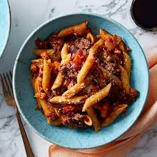

Spaghetti Bolognese

Description
Spaghetti bolognese is a great Italian dish if you want to impress a date
or pretend you're an Italian gangster in the 1970s. Whichever way you want
to eat your bolognese, these steps to achieve this versatile dish!
Now you're probably wondering why this dish is one this website. That's because
we're gonna add some garam masala and mandras curry to this dish.
Why? Because, I said so. Now, follow these instructions.
Ingredients
- 750g of mince meat
- 1 large onion
- 2 teaspoons of powdered garlic
- 2 teaspoons of powdered ginger
- 1 bottle of bolognese
- 1 1/2 tablespoon of garam masala
- 1 1/2 tablespoon of mandras curry power
Instructions
- Put mince in the pan and stir until it's brown
- Add chopped onion to pan, stir until golden over medium heat
- Add powered garlic and ginger, stir and cook for two minutes
- Add bolognese and stir for two minutes
- Add garam masala and curry powder and stir for two minutes
- Add 250ml of water and leave for fourty minutes